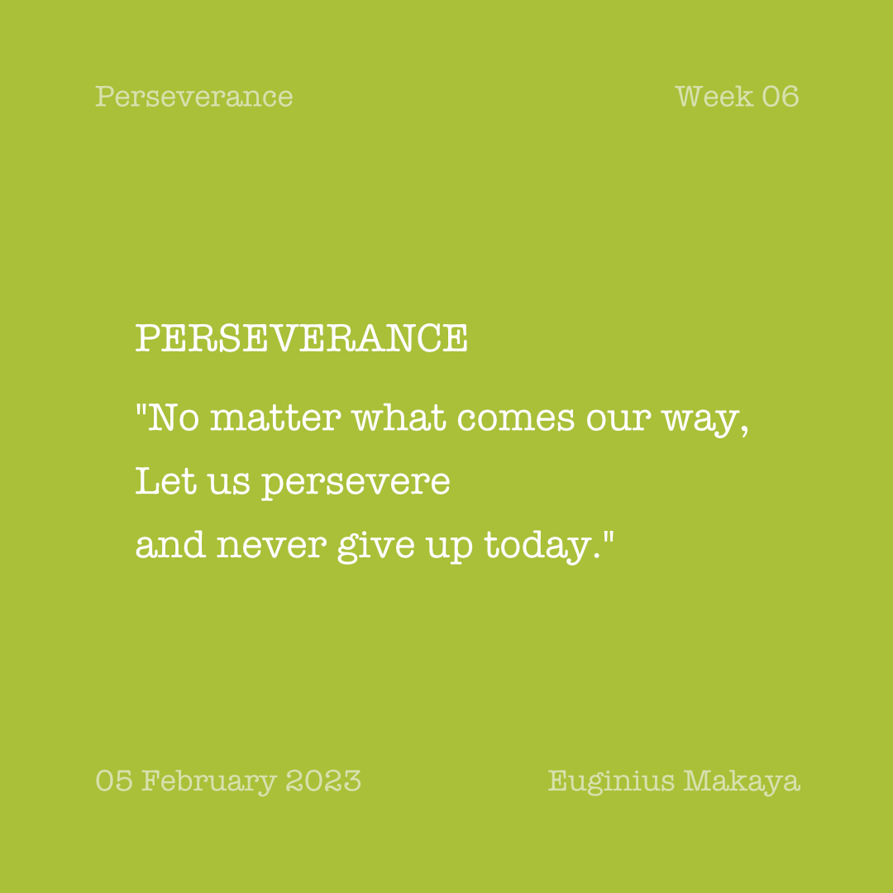
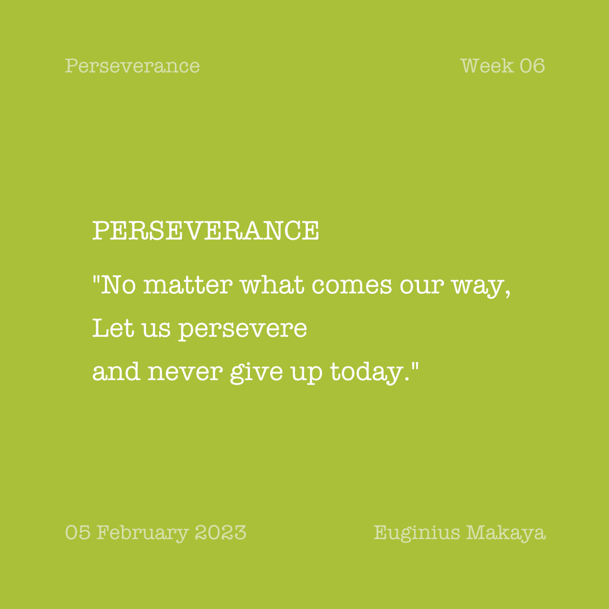

Quotation of the Day
Steps Towards a Goal
“When we look in a puddle of water we see reflections of ourselves. Seek for opportunities like these that help you see a reflection of your self. A self introspection session, a reflection moment, or moment of pondering can help you think deeply on choices you made in the past while contemplating on future decisions.”


 
